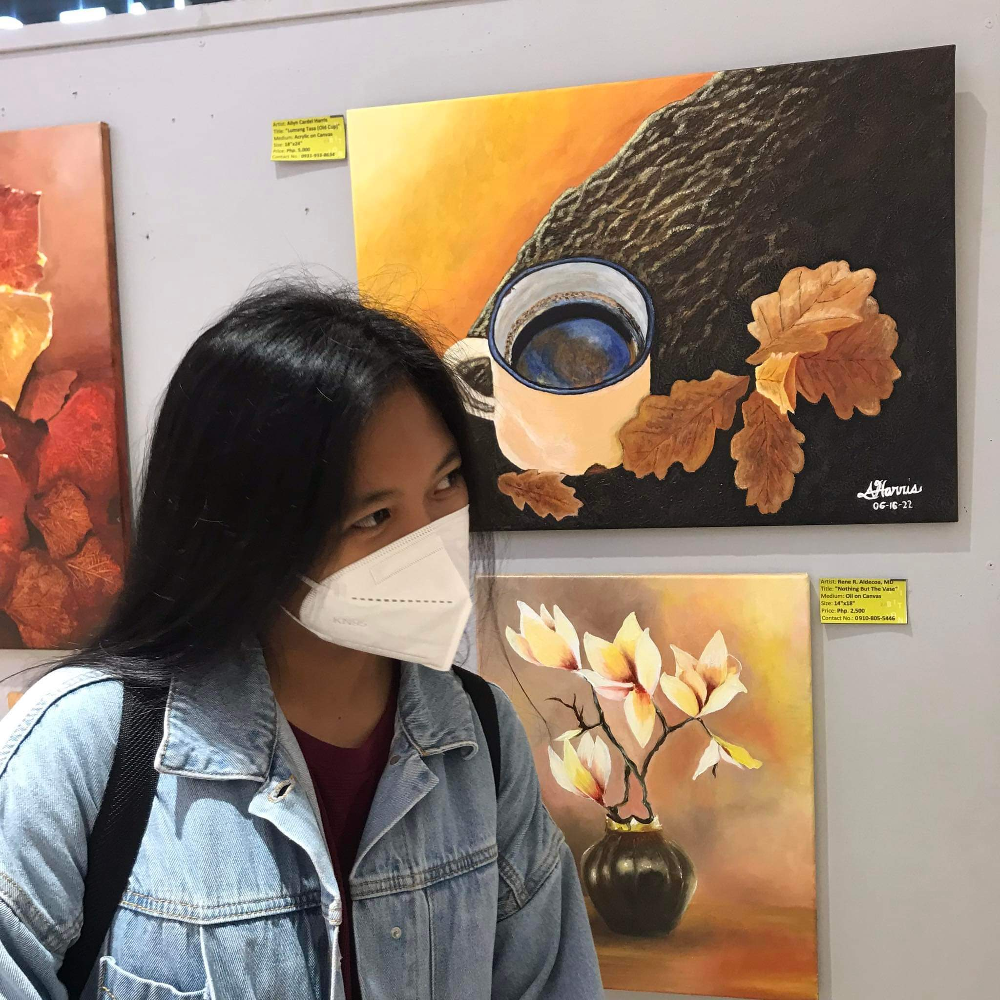

<html lang="en"></html>
<head>
    <meta charset="UTF-8" />
    <meta name="viewport" content="width=device-width, initial-scale=1.0" />
    <title>About me</title>
    <script src="https://unpkg.com/@phosphor-icons/web"></script>
    <link rel="stylesheet" href="about.css" />
</head>
<body style="background-color: #c8dbd7;">
    <div class="main">
        <div class="nav-link">
            <div class="header"
            data-aos="fade-down"
            data-aos-delay="300"
            data-aos-duration="400">
            <h2><SPAN>Portfolio</SPAN></h2></div>
            <ul >
                <li
                    data-aos="fade-down"
                    data-aos-delay="300"
                    data-aos-duration="400"><a href="home.html">Home</a></li>
                <li
                    data-aos="fade-down"
                    data-aos-delay="400"
                    data-aos-duration="500"><a href="about.html">About</a></li>
                <li
                    data-aos="fade-down"
                    data-aos-delay="600"
                    data-aos-duration="700"><a href="resume.html">Resume</a></li>
                <li
                    data-aos="fade-down"
                    data-aos-delay="600"
                    data-aos-duration="700"><a href="hobbies.html">Hobbies</a></li>
                <li
                data-aos="fade-down"
                    data-aos-delay="500"
                    data-aos-duration="600"><a href="gallery.html">Gallery</a> </li>
               
            </ul>
        </div>
        <div class="section">
            <div class="image-about"
                data-aos="fade-left"
                data-aos-delay="500"
                data-aos-duration="600">
                
            </div>
            <div class="line"
                data-aos="fade-left"
                data-aos-delay="600"
                data-aos-duration="700"></div>
            <div class="info"
                data-aos="fade-left"
                data-aos-delay="700"
                data-aos-duration="800">
                <p>Good day! I am Christine G. Boringot, a striving web developer from San Lorenzo, Tabaco City. I got my bachelor's degree at Bicol University Polangui. As a graduate of information technology, I was already able to experience the basic design and development of websites. I have skills in HTML, CSS, and Javascript, and I also have knowledge of user interface (UI) and user experience (UX). Designing is not the only skill I possess; I also have experience in making databases and networking. Though I'm not as good as other professionals, I firmly believe that I am a fast learner, hard-working, and have the ability to adapt quickly. </p>
            </div>
        </div>
     
        <div class="contacts">
            <a href=""><i class="fa-brands fa-facebook"
                data-aos="fade-right"
                data-aos-delay="300"
                data-aos-duration="400"></i></a>
            <a href=""><i class="fa-brands fa-github"
                data-aos="fade-right"
                data-aos-delay="400"
                data-aos-duration="500"></i></a>
            <a href=""><i class="fa-regular fa-envelope"
                data-aos="fade-right"
                data-aos-delay="500"
                data-aos-duration="600"></i></a>
            <a href=""><i class="fa-brands fa-instagram"
                data-aos="fade-right"
                data-aos-delay="600"
                data-aos-duration="700"></i></a>
        </div>
        </div>
</body>
<style>


</style>
<script>
    AOS.init();
</script>
</html>
</body>